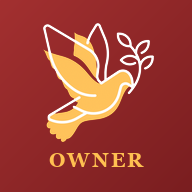

📊
Memuat dashboard…
Sinyal sedang lambat, halaman masih dimuat. Tidak perlu ditutup.
Tampilkan angka di ikon aplikasi kalau ada yang perlu dikerjakan?
Aktifkan
×

Pasang Dashboard Owner di layar utama HP
Pasang
×